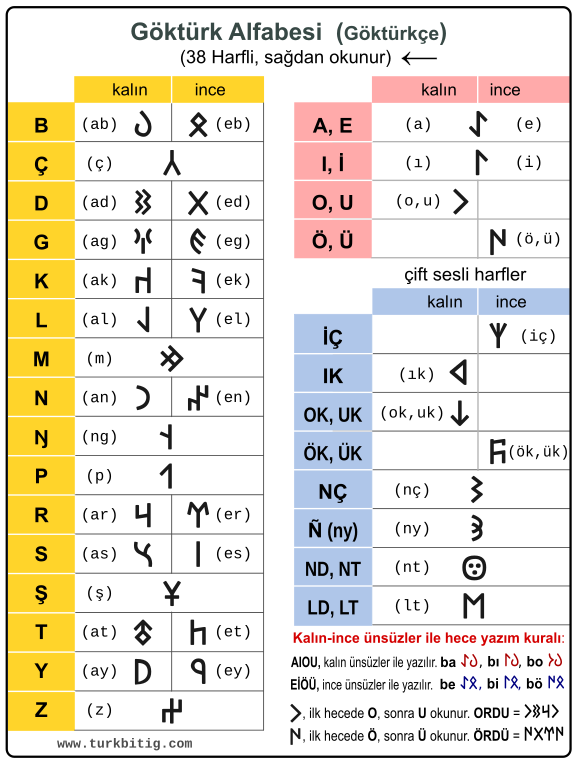

Göktürk Alfabesi
Göktürk alfabesi (Göktürkçe) Türk dilinin en eski yazı sistemidir. Sağdan sola doğru yazılır. 4 ünlü, 25 ünsüz ve 9 çift sesli olmak üzere toplam 38 harfden oluşur ve çoğu ünzüz harflerin kalın ve ince seslileri vardır. Orhun Yazıtları bu alfabe ile yazılmıştır. Bu sayfada Göktürk alfabesinin kuralları ile nasıl yazıldığını ve okunduğunu öğrenebilirsiniz.
Göktürk Alfabesi Harfleri
| Göktürk Alfabesi (Göktürkçe) (38 Harfli ─ sağdan okunur) | ||||||
| Ünsüz | kalın | ince | Ünlü | kalın | ince | |
| B | (ab) 𐰉 | 𐰋 (eb) | A, E | (a) 𐰀 (e) | ||
| Ç | (ç) 𐰲 | I, İ | (ı) 𐰃 (i) | |||
| D | (ad) 𐰑 | 𐰓 (ed) | O, U | (ou) 𐰆 | ||
| G | (ag) 𐰍 | 𐰏 (eg) | Ö, Ü | 𐰇 (öü) | ||
| K | (ak) 𐰴 | 𐰚 (ek) | ||||
| L | (al) 𐰞 | 𐰠 (el) | Çift-Sesli Harfler | |||
| Çift ses | kalın | ince | ||||
| M | (m) 𐰢 | İÇ | 𐰱 (iç) | |||
| N | (an) 𐰣 | 𐰤 (en) | IK | (ık) 𐰶 | ||
| P | (p) 𐰯 | OK,UK | (ok) 𐰸 | |||
| R | (ar) 𐰺 | 𐰼 (er) | ÖK,ÜK | 𐰜 (ök) | ||
| S | (as) 𐰽 | 𐰾 (es) | Ŋ | (ng) 𐰭 | ||
| Ş | (ş) 𐱁 | NÇ | (nç) 𐰨 | |||
| T | (at) 𐱃 | 𐱅 (et) | Ñ | (ny) 𐰪 | ||
| Y | (ay) 𐰖 | 𐰘 (ey) | ND/T | (nt) 𐰦 | ||
| Z | (z) 𐰔 | LD/T | (lt) 𐰡 | |||
 Alfabeyi indir: Resim | PDF
{kind=link}
Ünsüz Harflerin Kuralları
Göktürk Alfabesi'nde 10 ünsüz harfin kalın ve ince biçimi vardır. Bu dilimizdeki "büyük ünlü uyumu" kuralı ile bağlantılıdır.
| Ünsüz | kalın | ince |
| B | (ab) 𐰉 | 𐰋 (eb) |
| D | (ad) 𐰑 | 𐰓 (ed) |
| G | (ag) 𐰍 | 𐰏 (eg) |
| K | (ak) 𐰴 | 𐰚 (ek) |
| L | (al) 𐰞 | 𐰠 (el) |
| N | (an) 𐰣 | 𐰤 (en) |
| R | (ar) 𐰺 | 𐰼 (er) |
| S | (as) 𐰽 | 𐰾 (es) |
| T | (at) 𐱃 | 𐱅 (et) |
| Y | (ay) 𐰖 | 𐰘 (ey) |
Kalın-ince biçimi olan ünsüzlerin kullanımı şöyledir; Bir sözcüğün ilk hecesinde bir kalın ünlü (A, I, O, U) var ise, ünsüzün de "kalın" biçimi yazılır. Sözcüğün ilk hecesinde bir ince ünlü (E, İ, Ö, Ü) var ise, ünsüzün de ince biçimi yazılır.
Kalın hece örnekleri;
𐰴𐰍𐰣 KaGaN. (kağan)
𐰉𐰆𐰑𐰣 BODuN. (boyun, boylar)
𐰆𐰍𐰞𐰃 OGLI (oğlu)
İnce hece örnekleri;
𐱅𐰇𐰼𐰜 TÜRK
𐰋𐰏𐰠𐰼 BEGLER (beğ>beyler)
𐱅𐰃𐰏𐰤 TİGiN (prens)
Örneklerde görüldüğü gibi, kalın ünlü (A, I, O, U) içeren hecede ünsüzün de kalın biçimi yazılmıştır. ince ünlü (E, İ, Ö, Ü) içeren hecede ise ünsüzün de ince biçimi yazılmıştır.
| Ünsüz | kalın | ince |
| Ç | (ç) 𐰲 | |
| M | (m) 𐰢 | |
| Ŋ | (ng) 𐰭 | |
| P | (p) 𐰯 | |
| Ş | (ş) 𐱁 | |
| Z | (z) 𐰔 | |
Kalın - ince ayrımı olmayan; Ç, M, P, Ş, Z ünsüzleri, tüm ünlüler ile hece kurabilirler.
Örnekler;
𐰚𐰇𐰢𐱁 KÜMüŞ (gümüş)
𐰋𐰓𐰕𐰲𐰃 BeDiZÇİ (ressam)
𐰾𐰇𐰚𐰯𐰤 SÖKüPeN (söküp)
𐰆𐰍𐰔 OGuZ (Oğuz)
𐰴𐰔𐰍𐰣𐰯 KaZGaNıP (kazanıp)
Görüldüğü gibi, 𐰔 𐱁 𐰯 𐰢 𐰲 harfleri kalın-ince ayrımı olmadan serbestçe yazılmışlardır.
Ünlü Harflerin Kuralları
Göktürk Alfabesi'nde toplam 4 ünlü harf vardır. Türkçe'nin 8 ünlü sesini bu 4 harf karşılar. Şimdi bu 4 ünlü harfi tek-tek ele alalım;
| Ünlü | kalın | ince |
| A, E | (a) 𐰀 (e) | |
| I, İ | (ı) 𐰃 (i) | |
| O, U | (ou) 𐰆 | |
| Ö, Ü | 𐰇 (öü) | |
𐰀 harfi, kalın ünsüzler ile hece kurunca "A" sesini verir, ince ünsüzler ile "E" sesini verir, kelime aralarında yazılmaz, kelimenin son harfi ise yazılır.
Not: Tüm örnek kelimeler Orhun Yazıtları'ndan alınmıştır.
Örnekler;
𐰴𐰺𐰀 KaRA (kara)
𐰴𐰍𐰣𐰴𐰀 KaGaNKA (kağana)
𐱃𐰉𐰍𐰲𐰴𐰀 TaBGaÇKA (Tabgaça)
𐰇𐰔𐰀 ÜZE (üzerinde)
𐰚𐰲𐰀 KeÇE (geçip)
𐱅𐰭𐰼𐰃𐰓𐰀 TeÑRİDE (Tanrıda)
Örneklerde görüldüğü gibi 𐰀 harfi ara hecelerde yazılmamış ama son harf iken yazılmıştır. Aynı harf kalın ünsüzler ile yazılınca "A" sesi vermiş, ince ünsüzler ile yazılınca "E" sesi vermiştir.
Not : Günümüz Türkçe'sini yazabilmek için 𐰀 harfini kelimenin baş harfi iken veya ilk hecede iken de yazmak gerekir, 'Adana' 𐰀𐰑𐰣𐰀 ve 'Dana' 𐰑𐰀𐰣𐰀 gibi benzer kelimeleri ancak böylece ayırabiliriz.
𐰃 harfi, kalın ünsüzler ile hece kurunca "I", ince ünsüzler ile "İ" sesi verir, ilk hecede yazılır, tekrar eden ara hecelerde yazılmaz, kelimenin son harfi ise yazılır.
Örnekler;
𐰉𐰃𐰲𐰑𐰃 BIÇDI
𐰴𐰃𐰞𐰣𐰢𐰾 KILıNMıS (kılınmış)
𐰃𐰲𐰚𐰓𐰃 İÇiKDİ (içeri katıldı)
𐰃𐰤𐱅𐰢𐰔 İNTiMiZ (indik)
𐱅𐰃𐰼𐰠𐱅𐰃 TİRiLTİ (dirildi)
Örneklerde görüldüğü gibi 𐰃 harfi ilk hecede yazılmış, ara hecelerde tekrar edince yazılmamış ama son harf iken yazılmıştır. Aynı harf kalın ünsüzler ile yazılınca "I" sesi vermiş, ince ünsüzler ile yazılınca "İ" sesi vermiştir.
𐰆 harfi, ilk hecede "O" sesi verir, sonraki hecelerde "U" sesi verir, ilk hecede yazılır, tekrar eden ara hecelerde yazılmaz, kelimenin son harfi ise yazılır. (ince ünsüzler ile hece kuramaz)
Örnekler;
𐰆𐰍𐰔 OGuZ (Oğuz)
𐱃𐰆𐰍𐰆 TOGU (doğu)
𐰖𐰆𐰍𐰺𐰆 YOGuRU
Örneklerde görüldüğü gibi 𐰆 harfi ilk hecede yazılmış, ara hecede tekrar edince yazılmamış ama son harf iken yazılmıştır. Aynı harf ilk hecede "O" sesi vermiş, sonraki hecelerde "U" sesi vermiştir.
𐰇 harfi, ilk hecede "Ö" sesi verir, sonraki hecelerde "Ü" sesi verir, ilk hecede yazılır, tekrar eden ara hecelerde yazılmaz, kelimenin son harfi ise yazılır. (kalın ünsüzler ile hece kuramaz)
Örnekler;
𐰇𐱅𐰼𐰇 ÖTüRÜ
𐰚𐰇𐰼𐰇 KÖRÜ (görüp)
𐰇𐰠𐰇 ÖLÜ (ölüp)
Örneklerde görüldüğü gibi 𐰇 harfi ilk hecede yazılmış, ara hecede tekrar edince yazılmamış ama son harf iken yazılmıştır. Aynı harf ilk hecede "Ö" sesi vermiş, sonraki hecelerde "Ü" sesi vermiştir.
Not: Bu örnekleri çoğaltmak mümkündür ve harflerin bu yazım kurallarına uyguğu tespit edilmiştir.
İlk hecenin düz ünlüsünden sonra gelen yuvarlak ünlüler yazılır.
Örnek; "altın" manasına gelen aLTUN 𐰞𐱃𐰆𐰣 kelimesinde, kalın düz ünlü olan "A" dan sonra sonra gelen "U" yazılmıştır. Ve yine, "getirdim" manasına gelen KeLÜRTüM 𐰚𐰠𐰇𐰼𐱅𐰢 kelimesinde, ince düz ünlü olan "E" den sonra sonra gelen "Ü" yazılmıştır.
İlk hecedeki yuvarlak ünlülerden sonra gelen düz ünlüler yazılır.
Örnek; OGLITI 𐰆𐰍𐰞𐰃𐱃𐰃 ve SÜÇİG 𐰾𐰇𐰲𐰃𐰏 kelimelerinde, "O" ve "Ü" yuvarlak ünlülerinden sonra gelen "I" ve "İ" düz ünlülerinin yazıldığını görüyoruz.
Not: Göktürk alfabesinin kuralları gereği, "Türk" kelimesi eskiden "Törük" olarak okunur idi. "Törü-" kelimesi Orhun Abidelerinde "türemiş" ve "töre" manalarında da kullanılmıştır ve aynı kökten gelir. Bu nedenle Türk kelimesinin "belli bir atadan türeyen" veya "belli bir töresi olan" millet manasına geldiği düşünülmektedir. Orhun Yazıtları'nda geçen şu metinlere bakınınız.
(
: ÖD: TeŊRİ: YaŞaR: KİSİ: OGLI: KOP: ÖLGeLİ:
(Zamanı Tanrı yaşar, Kişi oğlu hep ölümlü
Bu örneklerde görüldüğü gibi, Törü~ kelimesi hem 'türemek' manasında hem de 'töresi olan halk' manasında kullanılmıştır ve ~k eki alarak 'törük' olmuş ve isim haline gelmiştir.
Çift Sesli Harfler
Tablodaki harfler 'çift-sesli'dir.
| Çift sesli | kalın | ince |
| İÇ | 𐰱 (iç) | |
| IK | (ık) 𐰶 | |
| OK,UK | (ok) 𐰸 | |
| ÖK,ÜK | 𐰜 (ök) | |
| Ŋ | (ng) 𐰭 | |
| NÇ | (nç) 𐰨 | |
| Ñ | (ny) 𐰪 | |
| ND/T | (nt) 𐰦 | |
| LD/T | (lt) 𐰡 | |
𐰱 sadece 'iç' yazarken kullanılmıştır.
𐰶 'ık, kı' heceleri yazarken kullanılır.
𐰸 'ok, uk, ko, ku' heceleri yazarken kullanılır.
𐰜 'ök, ük, kö, kü' heceleri yazarken kullanılır.
𐰭 'ng' sesi verir.
𐰨 'nç' sesi verir.
𐰪 'ny' sesi verir.
𐰦 'nd, nt' sesleri verir.
𐰡 'ld, lt' sesleri verir.
Çift Seslilerin Kullanımı
| ← | Örnekler |
|---|---|
| 𐰴𐰔 |
KaZa |
| 𐱅 |
Te |
| 𐰸𐰆 |
KO |
| 𐰴 |
Ka |
| 𐰴 |
Ka |
| 𐰴𐰔 |
KaZ |
| 𐰉𐰆𐰔 |
BOZ |
| 𐱅𐰇𐰼 |
TÖR |
Göktürk Alfabesini el yazısı ile de yazmak mümkündür, deneyin!
| Göktürk Alfabesi (Göktürkçe) (38 Harfli ─ el yazısı) | ||||||
| Ünsüz | kalın | ince | Ünlü | kalın | ince | |
| B | (ab) 𐰉 | 𐰋 (eb) | A, E | (a) 𐰀 (e) | ||
| Ç | (ç) 𐰲 | I, İ | (ı) 𐰃 (i) | |||
| D | (ad) 𐰑 | 𐰓 (ed) | O, U | (ou) 𐰆 | ||
| G | (ag) 𐰍 | 𐰏 (eg) | Ö, Ü | 𐰇 (öü) | ||
| K | (ak) 𐰴 | 𐰚 (ek) | ||||
| L | (al) 𐰞 | 𐰠 (el) | Çift-Sesli Harfler | |||
| Çift ses | kalın | ince | ||||
| M | (m) 𐰢 | İÇ | 𐰱 (iç) | |||
| N | (an) 𐰣 | 𐰤 (en) | IK | (ık) 𐰶 | ||
| P | (p) 𐰯 | OK,UK | (ok) 𐰸 | |||
| R | (ar) 𐰺 | 𐰼 (er) | ÖK,ÜK | 𐰜 (ök) | ||
| S | (as) 𐰽 | 𐰾 (es) | Ŋ | (ng) 𐰭 | ||
| Ş | (ş) 𐱁 | NÇ | (nç) 𐰨 | |||
| T | (at) 𐱃 | 𐱅 (et) | Ñ | (ny) 𐰪 | ||
| Y | (ay) 𐰖 | 𐰘 (ey) | ND/T | (nt) 𐰦 | ||
| Z | (z) 𐰔 | LD/T | (lt) 𐰡 | |||
{kind=link}
Göktürk Alfabesi Örnekleri
Orhun Yazıtları'ndan Göktürk Alfabesi örnekleri:

Orhun Yazıtları'nda 'Türk' kelimesi böyle yazılmıştır.

Külteğin Abidesi'nin güney yüzü 6. dizeden alıntı.

Orhun Yazıtları Bilge Tonyukuk Abidesi 1. taş güney yüzü 1. dizeden alıntılar.


Irk Bitig kitabı 57. sayfadan alıntı. (9. yüzyıldan kalma)
Göktürk Alfabesi Hakkında
Göktürk Alfabesi, Göktürk Kağanlığı döneminde kullanılan ilk Türk alfabesidir ve 730'lu yıllarda dikilen Orhun Yazıtları dahil çeşitli yazılı taş ve yazma eserlerde Türk dilini yazmak için kullanılmıştır. Bu alfabenin daha sonra gelen Uygur Kağanlığı döneminde de kullanıldığı tespit edilmiştir. Bunun dışında Göktürk alfabesi, değişik biçimleri ile Bulgarlar, Hazarlar, Peçenekler ve Sekeller gibi farklı Türk boyları tarafından da kullanılmış ve Orta Asya'dan Avrupa içlerine kadar yayılmıştır.
Göktürk Alfabesi'nden bize kalan en önemli eserler bugün Orhun Yazıtları olarak bildiğimiz Moğolistan'da bulunan Türkçe yazılı anıt taşlardır. Danimarkalı Türkolog Wilhelm Thomsen, 1893 yılında bu taşlardaki alfabeyi çözerek yazıları okumayı başarmıştır. Yazının eski Türkçe olduğu ve bu anıt taşların Bilge Kağan, Kültiğin ve Tonyukuk adına 730'lu yıllarda dikildikleri tespit edilmiştir.
- Orhun Yazıtları'nı ilk çözen Danimarka'lı Türkolog Vilhelm Thomsen'in 1893 yılında yayınladığı Inscriptions de L'Orkhon Déchiffrées adlı kitabındaki Göktürk Alfabesi, Orhun ve Yenisey biçimleri ile.